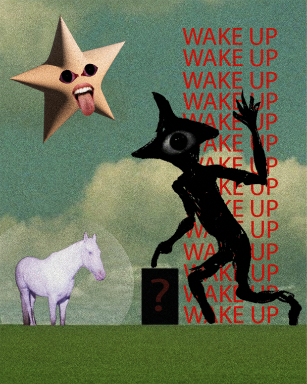
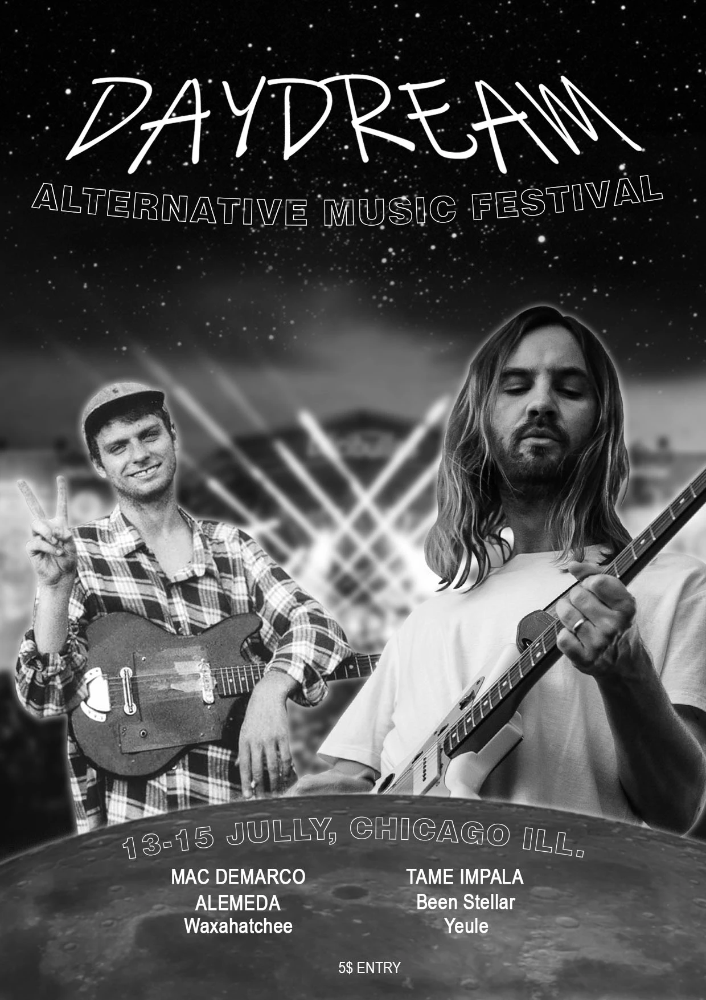

Créations variées · Exercices graphiques
Projets divers
Plusieurs projets graphiques indépendants, chacun avec ses propres contraintes et sa propre direction artistique.
Cyber-Purgatory

Concept
Création graphique à l'esthétique dystopique et digital, style y2k. Le visuel explore l'idée d'un afterlife numérique : un purgatoire technologique où le réel et le virtuel se mélangent, laissant les âmes se perdre dans les trefonds d'un réseau digital surnaturel et sans fin.
Direction artistique
Le rendu montre donc différents éléments : une radio, rappelant le corps humain et l'enveloppe charnel de tout un chacun, ce regard emplit de haine, comme frustré et assoiffé de vengeance contre ceux responsable de son malheur, le cd eclaté, métaphore d'une vie brisé... Le tout dans une carte orné par des symboles typiques de l'esthétique y2k.
Ce travail m'a permis d'explorer différents thèmes qui me facinnent (l'afterlife, le monde numérique des années 90-2000...), avec des styles que j'apprécie particulièrement.
Wake Up

Concept
Travail de création libre, sans contrainte imposée. Faute de direction évidente, je me suis laissé porter par l'imaginaire pour représenter une vision cauchemardesque — ces mondes oniriques qui me fascinent depuis longtemps, où nos peurs les plus enfouies prennent forme : l'inconnu, le noir, le monstrueux, le surréalisme angoissant. Ce projet est délibérément dérangeant. Sa place dans ce portfolio tient à ce qu'il révèle sur ma façon de penser visuellement quand toutes les contraintes sont levées.
Direction artistique
L'esthétique des liminal spaces (espaces liminaux) s'est imposée comme le cadre idéal : ces environnements familiers et vides qui génèrent un malaise diffus sans qu'on sache vraiment pourquoi. Les grands champs ouverts installent d'abord un faux sentiment de sécurité, aussitôt contredit par le géant diforme et l'étoile dérangeante. Le mélange photo/illustration est volontaire — les yeux et la bouche sont des images réelles, plaquées sur une scène dessinée. Ce décalage entre le fictif et le corps humain vrai est au cœur du malaise recherché. Le cheval, clin d'œil à Twin Peaks de David Lynch, joue un rôle précis : il apporte un élément réconfortant et incongru dans la scène, comme dans certains cauchemars où une présence familière surgit sans raison dans un contexte horrifique — atténuant la terreur tout en accentuant le surréalisme.
Festival

Concept
Affiche de communication pour un festival fictif. Ma première réalisation graphique, cet exercice portait sur la lisibilité en grand format : hiérarchie typographique claire, impact visuel immédiat et équilibre entre l'image et l'information.
Direction artistique
Les contraintes d'une affiche de festival sont spécifiques : elle doit être lisible à distance, mémorable au premier coup d'œil et cohérente avec l'univers de l'événement. Ce projet, en plus de constituer une première expérience sur le logiciel Photoshop, a été l'occasion de travailler ces équilibres de façon concrète.